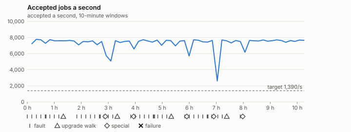
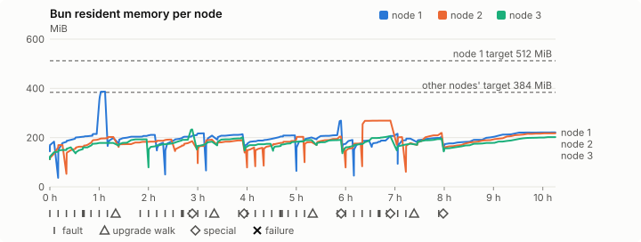
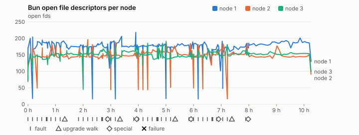
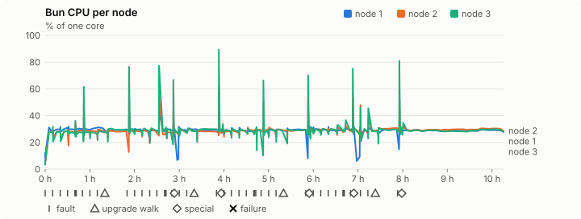
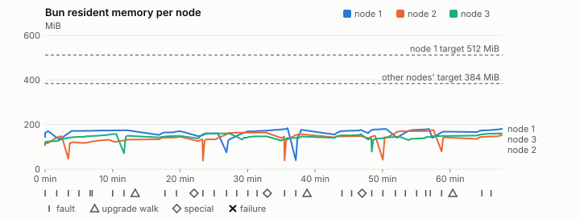
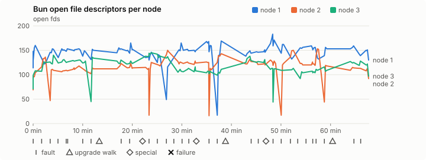
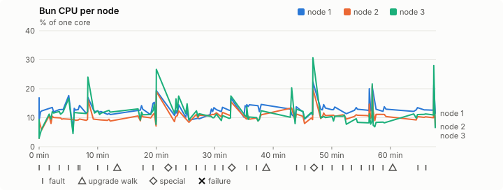
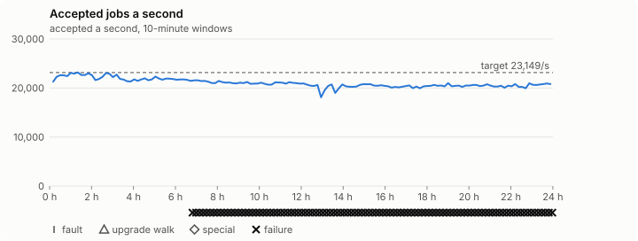
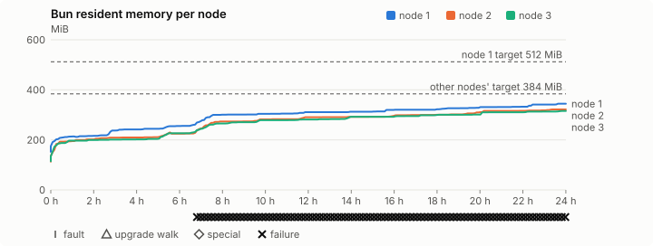

User documentation
Build requirements, runtimes, configuration, secure cluster setup and CLI commands.
Kubernetes gave us container orchestration, and gave every team an accidental platform engineering department. Reliaburger compiles the platform into one Rust agent: scheduling, mTLS, ingress, a registry, metrics, logs, GitOps, jobs and chaos testing. It’s a prototype. Try it on a laptop cluster, on an Apple silicon Mac or on Linux with KVM; five minutes from install to cluster is the target.
curl -fsSL https://reliaburger.com/install.sh | sh -s -- --laptopOne line installs relish, then builds a three-node cluster in Linux
VMs on your laptop, running real containers. It checks every download against a
pinned digest or the release’s signing key. Without --laptop it only
explains the choices, such as Linux machines you already have, and installs nothing.
Until 1.0.0, Reliaburger is for developers and enthusiasts trying it out, not for production.
You’ll need a Mac with Apple silicon, or Linux with QEMU and KVM, plus about 8 GiB of free memory and 15 GiB of disk. No Rust, no checkout.
One node, CLI only, cleanup · Read the bootstrap script · Release notes
Install, then put the cluster through its paces with a burger built from six apps: watch a layer cut off, a rolling deploy, a rollback, a scale-up, a killed patty, a batch of jobs, a network fault and a lost node. Same prerequisites as the install line.
curl -fsSL https://reliaburger.com/install.sh | sh -s -- --laptopInstalls relish, then builds a three-node cluster in Linux VMs on your
laptop. It checks every download against a pinned digest, and it’s the only step
that takes minutes.
curl -fsSL https://reliaburger.com/demo/burger.tar.gz | tar xzrelish build burger/burger.tomlrelish images
An app of your own: one small Go program and its Dockerfile. A node builds it with
Buildah, straight into the cluster’s own registry, signed, for both
linux/amd64 and linux/arm64: images lists
burger:v1 once, with its platforms. It’s the only image the tour
needs.
relish apply burger/burger.tomlrelish statusrelish council status
Eight apps from that one image: a layer of the burger each (top bun, lettuce,
tomato, cheese, patty, bottom bun), a counter in front and a diner who keeps
ordering. Give it half a minute. Three counters, one on each node, named
counter-0, -1 and -2: the scheduler spread
and numbered them, not you. status opens with a line on the council,
the Raft group that holds the cluster’s state; council status asks
every node for its own view of it.
curl http://burger.localhost:18080The burger, through the built-in ingress. The counter asks each layer by its service name and stacks whatever answers: one coloured line per layer, with its version and the node and instance that served it. Open the same address in a browser and it’s drawn in SVG, redrawn every second, so keep it open for what follows.
relish batch submit burger/jobs.tomlrelish batch watch 1relish jobs
Now cook some patties beside it: 8 small and 2 larger hashing jobs from
the same image, in two resource profiles. Each profile is stored as a template
and a count, not a record per task, and its tasks are packed around the apps
already running. watch takes the number submit
printed and shows the rate and how long tasks take; jobs lists
the finished run. Each task tells the counter its patty is done, and the
burger’s footer counts them. It keeps serving throughout.
relish fault partition lettuce --from counter --duration 30s --acknowledgecurl http://burger.localhost:18080
Cut the lettuce off from the counters, and there’s a gap where it was: the cluster refuses their connections. Nothing else notices, and after thirty seconds the fault lifts itself and the lettuce is back. No chaos tooling to install.
relish apply burger/cheese-v2.tomlcurl http://burger.localhost:18080
A rolling deploy: the same two cheese slices at v2. The node
starts a blue cheese beside the cheddar, waits for its health check, then drains
a cheddar, and goes again. The other slice keeps serving meanwhile, so the
burger never loses its cheese; it turns blue a slice at a time.
relish apply burger/patty-v3.tomlrelish statusrelish history patty
A bad deploy: patty v3 is raw in the middle and fails its health
check. It never joins the service, so the burger keeps its beef patty. After
twenty seconds the node rolls it back on its own, and status marks
the patty RolloutFailed so nothing retries it. history
shows what shipped when, on every node.
relish apply burger/triple-patty.tomlcurl http://burger.localhost:18080
Three patty replicas, and the counter finds all three: a triple patty, one
line per instance. Any change to the spec clears the RolloutFailed
mark, so this one goes out.
relish fault kill patty --acknowledgecurl http://burger.localhost:18080relish events --app patty
Kill a patty. For a few seconds it’s a double; then the node agent has
restarted it and it’s a triple again, the new patty under a new instance number.
The cluster won’t kill an app’s last replica, which is why this is a patty and
not the lettuce. events asks every node what happened and merges
the answers by time: the deploys, the failed v3 and its rollback,
the kill and the restart, each with its node.
relish path counter --to pattyWalk the path from a counter to the patties, hop by hop: DNS, the virtual IP, the eBPF service map in the kernel, the firewall, any active faults, then a real TCP connect from inside the counter. On Kubernetes you’d piece that together from five tools and a debug pod.
relish metrics counterThe counters’ own Prometheus metrics, from every replica. Each node scrapes
the replicas it runs, because the app says metrics = {}. There’s no
Prometheus to install.
relish fault delay patty 300ms --from counter --duration 2m --acknowledgerelish path counter --to patty --count 3
Now make the patties slow, but only for the counters. Every packet they send a patty waits 300 ms; the other layers don’t notice, and it lifts itself after two minutes. The path is now DEGRADED: it names the fault, shows the delay on the counter’s network interface, and every connect takes 300 ms. Your browser shows the same thing, each patty line in the hundreds of milliseconds.
relish dashboardThe same thing as live charts in your browser: CPU, memory in MiB, requests per second and latency in milliseconds, one line per replica. Ctrl-C closes it; the cluster keeps running.
relish local stop node-3relish inspect counter
Now lose a whole machine. About a minute later there are three running counters
again, spread over the two nodes that are left: each keeps the one it had, and one
of them starts a replacement under the lost one’s name. Any layer that lived on
node-3 comes back the same way. Nobody had to notice first. inspect
asks every node, lists each instance, running or stopped, with the node it’s on,
and names the node that didn’t answer.
relish wtfOne screen on what’s wrong and what to do about it. Here: a council member is missing, and one more failure would lose quorum. It also checks that every node runs the same build. It’s what you’d run first in a real incident.
Finished? Remove the cluster, then Relish itself:
relish local destroy --yesrelish uninstall
Also in the CLI: relish manual tour
· Read it on GitHub
· Prerequisites, retries and cleanup
· Read the bootstrap script
The same command, run four ways on the same VM with the same concurrency, so you can see what each kind of isolation costs.
1,807,742,226 host jobs in one real day. 0.2.3 ran host jobs for 24 hours on three 4-vCPU VMs on one laptop: 20,920 a second, counted as the council accepted them, not extrapolated from a minute. That’s 1.81 billion against the two billion we aimed for, with no failed tasks and every node within a point of its share. The same release ran 14,917 a second on one node and 29,350 on three in a short benchmark; a whole day on a laptop whose cores the VMs fill runs slower. Bun’s memory grew through the day, inside its budget, and 0.2.4 finds out why. Day-run record · Benchmark record · Charts
Each scenario defaults to 60 seconds and concurrency 27 per node. The public scenarios use your configured cluster endpoint, token and CA. They submit real work, so use a test cluster.
relish bench --scenario jobs-vm-baselineRun this inside the Linux VM that runs your jobs. Relish prepares the pinned BusyBox executable before timing raw process exits. This is the local reference, without scheduler or durability costs.
relish bench --scenario jobs-containersFresh containers for fully isolated, independent jobs. Each job starts its own container. The node needs rootful Linux runc; image preparation and startup count inside the public window.
relish bench --scenario jobs-shared-containersShared containers for repeatable tasks where startup would dominate the work. Each command starts a new process in a reusable container; this doesn't keep an interpreter or AI model resident.
relish bench --scenario jobs-host-processesHost jobs for maximum speed with no isolation. Bun must run in
auto or mixed mode on supported rootful Linux,
with /bin/busybox explicitly allowlisted and
mount_isolation = false. Explicit runc mode
refuses host jobs; the benchmark doesn't change these permissions.
For a matched comparison, use a single-node test cluster and run all four sequentially on the same VM with the same BusyBox binary. The defaults match the recording's duration and concurrency; available resources determine how many commands actually run. Image pulls count in the public windows unless you've warmed the image beforehand.
relish bench --scenario jobs-shared-containers --seconds 60 --concurrency 27 --report shared-jobs.jsonChange the duration or concurrency to suit your rig. The report includes accepted successes, failures, retries, extrapolated runs/day and cleanup; choose a new report filename for each run. Relish cancels its own work and verifies drain after the timed window, including on Ctrl-C.
Run independent jobs in fresh, fully isolated containers. Use a shared container for repeatable tasks when starting a container for every command would dominate the work. Choose host jobs for maximum speed with no isolation, using an explicit allowlisted binary. All three use built-in resource admission, durable ownership, retries and accepted outcomes.
| Execution | Best for | Completed in 60 seconds | Rate | Extrapolated runs/day | Retries |
|---|---|---|---|---|---|
| VM baseline | Raw-process reference on this VM | 929,510 raw exits | 15,491.8/s | 1.3B | Not applicable |
| Fresh containers | Fully isolated, independent jobs | 762 accepted jobs | 12.7/s | 1.1M | 1 in five rounds |
| Shared containers | Repeatable tasks; amortised container startup | 175,000 accepted jobs | 2,916.7/s | 252M | 0 |
| Host jobs | Maximum speed for trusted commands; no isolation | 280,000 accepted jobs | 4,666.7/s | 403.2M | 0 |
Testing rig: a local Lima VM on an Apple M2 Max host (12 physical cores,
32 GiB host RAM), with 4 vCPU and 8 GiB allocated to Ubuntu 24.04 aarch64,
Linux 6.8 and runc 1.4. These figures measure the per-job overhead of BusyBox
true, a command that does no work; benchmark your real commands
on your own hardware when sizing a cluster. Single windows vary: across the
five rounds, raw and host-job rates varied by about a quarter and the
container paths by up to 15%. With 13 ms of real work per task, host jobs
reached three quarters of the raw rate in an earlier rerun.
The VM baseline is a raw-process reference for this VM and command, not a ceiling. It counts successful exits without resource enforcement, durable ownership or task ledgers. Public rows count unique accepted successes received within the window; their rate gap includes those guarantees. Runs/day multiplies the minute count by 1,440; it isn't an observed daily total.
The published v0.2.0 binaries, 4 vCPU / 8 GiB, Ubuntu 24.04 aarch64, beside a 500m BusyBox web app. Pinned BusyBox commands, warm images and cold executors. The recording above is an earlier development build's single run. All public paths request 25m CPU / 32 MiB and enforce a one-core limit; native/shared helpers reserve another 10m / 8 MiB. One active submission caps each public mode at 27. Fresh containers use one-job receipt chunks; fast modes use 1,000-job chunks to amortise reporting. The receipt size controls reporting, not resource admission. Counts conservatively exclude results after the last sample. Preparation, cancellation and verified cleanup remain visible outside the 60-second windows. All windows have zero failures; one fresh-container window accepted one retry. In the recording, real pauses are preserved; chapter jumps and playback speed change only your view.
v0.2.0 measurements · Recording's report · The recording's raw results · Job manual
Use indexed work for data preparation, offline evaluation and independent inference commands. Fresh containers keep dependencies and jobs separate; shared containers reuse their environment. Each job still starts a process; keeping an AI model resident is a separate planned executor.
Green unit tests don't ship a release. Every candidate is built and signed once, installed the way you'd install it, then left running under faults for hours. Only the maintainer promotes it, and only the exact files that passed.
curl | sh from empty
caches, twice, then the five-minute tour and a full teardown.| Fault | How |
|---|---|
| Agent killed | SIGKILL Bun on a follower, then on the leader |
| Killed mid-deploy | A rolling deploy, with SIGKILL 0–20 s later on a node receiving a replacement |
| Power cut | A VM forced off for 60–180 s, then started again |
| Chaos | relish fault: kill, pause, delay, drop, partition and DNS failure |
| Upgrade walk | Every node to a signed soak build and back, every other walk with a power-off or leader kill mid-walk |
| Node faults (jobs) | Inter-node delay, a full disk and slow fsync |
| Whole cluster | Graceful stop and start, quorum loss with two nodes off, and every VM off at once |
One occurrence of any of these fails the release: a lost write or a counter that goes backwards, a certificate close to expiry, no leader for more than 30 seconds, a fault that doesn't settle in time, leaked containers, namespaces or memory, an upgrade on the wrong version, an agent panic or an unexplained restart, an agent loop stalled for over a second, or a job that runs twice, goes missing or never drains. A failure gets a root cause before anything else happens. A product fix means a new candidate, and every soak starts again.
Time runs from the start of each soak. The marks under a chart are its faults and upgrade walks, and the dashed lines its targets. Open a chart to see it full size, with every mark named when you point at it.




The gate has no separate 8-hour app soak: the job soak above runs the same apps and faults. These are from the compressed one.



Host jobs only, no faults, on 4-vCPU VMs: the count behind 0.2.3’s headline.


The latest: 0.2.3, 28 October 2026. One candidate over three days, and it passed every gate. Its first one-hour app soak failed on an agent-loop turn waiting on the host’s stalled disk, which the maintainer accepted, and the rerun passed. Then the day run: 24 hours of host jobs, published with the harness’s own FAIL verdict and every failure explained. The release log has every release's story.
What the soaks don't prove: they run three small VMs on one laptop, so they say nothing about large clusters, real networks between machines or hardware failing. A VM forced off isn't a real power loss, the fault rates are a schedule, not production traffic, and zero failures in 25 runs only rules out failure rates above about 12%. How each gate works, and how it compares with Kubernetes' release testing.
Hacking on Reliaburger itself? Start with a local process. No container runtime required.
You’ll need Rust and the build tools for your platform. This example runs
hello as a host process under the built-in process runtime, which
runs the binaries the node config allows and no images; it doesn’t create
an isolated container or a multi-node cluster.
For real OCI containers, use runc on Linux. On macOS, the managed laptop quickstart uses Linux VMs. Direct Apple Container is deferred beyond 0.2.3.
Build requirements & runtime setup# Terminal 1 · build and start the agent
git clone https://github.com/reliaburger/reliaburger
cd reliaburger
cargo build --bins
target/debug/bun --runtime process \
--config examples/node/process-runtime.toml
# Terminal 2 · from the same checkout
target/debug/relish apply \
examples/phase-1/proc-first-run.toml
target/debug/relish status
target/debug/relishBuild requirements, runtimes, configuration, secure cluster setup and CLI commands.
The architecture, its trade-offs and the longer-term vision. Includes features still planned.
PDF from the latest releaseProtocols, data structures, failure modes and decisions for each subsystem.
PDF from the latest releaseThe companion book: build the orchestrator while learning Rust and distributed systems. For programmers coming from C, Python or Go.
PDF from the latest releaseThe manual is also embedded in relish manual. Browse the example configs by phase and runtime.
What’s implemented, what 0.2.3 leaves out and what’s next. Read alongside the roadmap.
Every release carries PDFs, and these links always fetch the latest:
whitepaper,
design docs,
the book and
roadmap. The Markdown on GitHub
follows main, so it can be newer.
See how Reliaburger’s integrated deployment and diagnosis compare, with practical commands and sources beside the claims. These pages describe 0.2.3, the release the installer installs, and were last re-checked on 21 October 2026.
Pods, controllers, storage and extensibility; installation with kubeadm and the cost of operating the platform.
Jobs, groups, allocations and service discovery; what comes with the scheduler and what you integrate.
What its bundled runtime, networking and ingress simplify, and which Kubernetes concepts remain.
Services, networks and volumes; where a single Docker host is enough and what changes when you need a cluster.
Git deployments, preview environments, domains and backups; the difference between deployment to servers and cluster reconciliation.
Compose, WireGuard and Caddy; straightforward deployment across machines and the limits of automatic recovery.
bun runs on each node. relish talks to its API.
The names are burger ingredients; the links are the design documents.
Open an issue with your OS, runtime, config and the steps to reproduce it. Implementation changes come with tests and a chapter in the book.